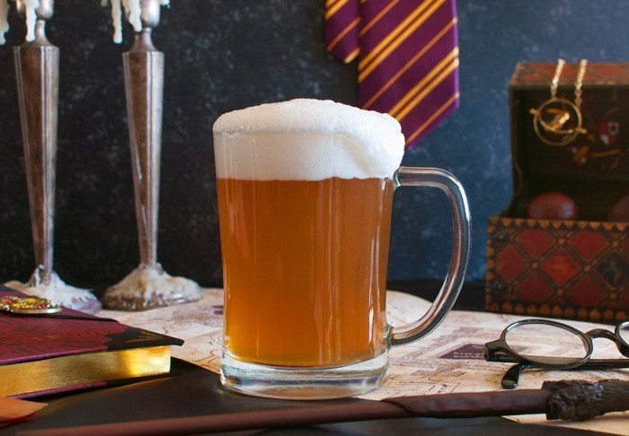

"Butterbeer is a popular wizarding beverage in the Harry Potter series.
It is described as a sweet and creamy drink that is often served warm, although
it can also be enjoyed cold. While the exact recipe for Butterbeer is a closely
guarded secret in the wizarding world, there are many recipes out there that
attempt to recreate the magical beverage."
Ingredients
- 2L of cream soda chilled
- 1/4 teaspoon of caramel extract
- 1/4 teaspoon of butter extract
For the cream topping:
- 1 cup of heavy whipping cream
- 1/2 cup of butterscotch topping
- 1/4 cup of powdered sugar
Steps
- In a large mixing bowl, whip the heavy cream until it forms stiff peaks.
- Add the butterscotch topping and powdered sugar.
- Mix the caramel and butter extract with the cream soda and then pour the mixture
into clear cups or mugs.
- Top with butterscotch cream topping and enjoy!
Back to the top of the page
Back to the main page
Next recipe: Polyjuice Potion